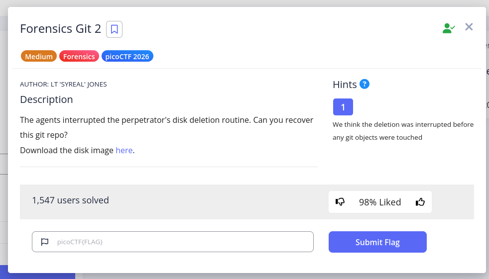

Forensics Git 2
Category: Forensics
Difficulty: Medium
Author: LT 'SYREAL' JONES

Title:
Forensics Git 2
Description:
The agents interrupted the perpetrators disk deletion routine. Can you recover the git repo?
Hints: 1
- We think the deletion was interrrupted before any git objects were touched
Tools Used
- Kali Linux with The Sleuth Kit (TSK) and Git
Solution Path
- Use
fdiskto find the disk partition andmountusing the offset findthe directory containing the.gitfile and cd into that dir- Enumerate orphaned objects with
find .git/objects -type fandfsck - Dump all object content with
git cat-fileand grep 'pico' to get the flag
My Process
I used perplexity.ai to help me out on this one. I followed along every step of the way but I'm still working on understand the very last command that got the flag.
But let's start at the beginning.
I downloaded the disk image from the link in the challenge.
I initially thought I should use Autopsy, but perplexity told me that Sleuth Kit via the command line would work better, so we did that, and after we started I realized that's what I was thinking of anyway. As it turned out, we only used one Sleuth Kit command anyway, and that ended up being a tangent/dead-end. The real work was all done via Linux or Git tools.
To start, we used 'fdisk' to check out the disk image.
┌──(kali㉿kali)-[~/Downloads]
└─$ fdisk -l 2disk.img
Disk 2disk.img: 1 GiB, 1073741824 bytes, 2097152 sectors
Units: sectors of 1 * 512 = 512 bytes
Sector size (logical/physical): 512 bytes / 512 bytes
I/O size (minimum/optimal): 512 bytes / 512 bytes
Disklabel type: dos
Disk identifier: 0x610b63c2
Device Boot Start End Sectors Size Id Type
2disk.img1 * 2048 616447 614400 300M 83 Linux
2disk.img2 616448 1140735 524288 256M 82 Linux swap / Solaris
2disk.img3 1140736 2097151 956416 467M 83 Linux
Partition 1 had the boot flag *
Partition 2 was swap space
This leaves partition 3, and along with the fact that it's the largest partition, we decided to mount and examine this one:
┌──(kali㉿kali)-[~/Downloads]
└─$ sudo mkdir /mnt/disk
sudo mount -o loop,offset=$((1140736*512)) 2disk.img /mnt/disk
Then, a simple recursive find scans the mounted filesystem for any .git directory. 2>/dev/null suppresses permission errors. The result finds one extremely likely candidate:
┌──(kali㉿kali)-[~/Downloads]
└─$ find /mnt/disk -name ".git" -type d 2>/dev/null
/mnt/disk/home/ctf-player/Code/killer-chat-app/.git
We used fls from The Sleuth Kit.
fls -r -d 2disk.img -o 1140736 | grep -iE "git|HEAD|COMMIT|objects"
- the
-dflag lists deleted files - the
-oflag specifies the partition offset (1140736), which we found with fdisk earlier
This fls command didn't reveal much that was useful:
┌──(kali㉿kali)-[~/Downloads]
└─$ fls -r -d 2disk.img -o 1140736 | grep -iE "git|HEAD|COMMIT|objects"
l/l * 65546(realloc): usr/libexec/git-core/.apk.fdd732dda690632410861ee6af39181d3893543354d29a2f
l/l * 65579(realloc): usr/libexec/git-core/.apk.a977403b016612e0a90da24c24072a39146b385312288815
l/l * 65583(realloc): usr/libexec/git-core/.apk.45212ae72a086ec160c095c91dc4162f2d73197618494912
-/- * 0: usr/libexec/git-core/@
So then we used cd to get into the directory we found containing the .git file, checked the commit log, which revealed nothing, and then looked for orphaned files:
┌──(kali㉿kali)-[~/Downloads]
└─$ cd /mnt/disk/home/ctf-player/Code/killer-chat-app
┌──(kali㉿kali)-[/mnt/…/home/ctf-player/Code/killer-chat-app]
└─$ git log --oneline --all
┌──(kali㉿kali)-[/mnt/…/home/ctf-player/Code/killer-chat-app]
└─$ git log --oneline
fatal: your current branch 'master' does not have any commits yet
┌──(kali㉿kali)-[/mnt/…/home/ctf-player/Code/killer-chat-app]
└─$ find .git/objects -type f
.git/objects/aa/1cc01687b4ec94faf9916c3fc6efd83f23b816
.git/objects/26/b809e0c41d8421f1126ed3a4eb06ad66e6d90a
.git/objects/f1/50f0b963ab3ee95ba5656212abd76d7f2fed2e
.git/objects/5e/b896e3ccd51175f66480cdb247fc45f3e8ac2d
.git/objects/e8/0b38b3322a5ba32ac07076ef5eeb4a59449875
.git/objects/6b/1ebe10826d5c1efc58ae475c0a0af10f580b77
.git/objects/6b/f83de540f7d12cc3b683a83d69432e03d84509
.git/objects/2c/0a9b2b15dce92f800393d5030c7454efc278ae
.git/objects/d4/666b9472fad7cd75d05b641e402347d9aac605
.git/objects/ea/d27e2bd5a0fc22868ffb629a768f82dfcda11c
.git/objects/22/f7d0c9bd045563ae33bfacfbe46fe406a5b318
.git/objects/c9/31ae0868411e5f23656a2436e78a4c4699e18c
.git/objects/20/1c707b43219a63c1d3499b29c7d539af079861
.git/objects/21/51ef0ccc15aed1ab88e1afdc7484aaeff211c4
.git/objects/58/27632e046a80a1e0d7b4fc5c7800dd539baeaf
.git/objects/d7/b4a371ebd23e682ffebc7ec355690fdc94fbd1
.git/objects/a0/c13fe974d95661f24e32bc0d79f54f05ea13c5
.git/objects/66/273877d2ff3f51a14473b7200aae5a798ff64f
.git/objects/71/78644433e7cb6da3adf028f1c80d382a18e7b6
.git/objects/71/fd2fafcd5ebd62fbf857769c92a91225ab3954
.git/objects/01/533f718556a0e59f1467dae4fa462eed82c2a1
The find command above just looked in the .git/objects directory, using the -type f tag to look specifiically for regular files.
Next, we used git fsck to confirm the files we found above are orphaned.
┌──(kali㉿kali)-[/mnt/…/home/ctf-player/Code/killer-chat-app]
└─$ git fsck --full
Checking ref database: 100% (1/1), done.
Checking object directories: 100% (256/256), done.
notice: HEAD points to an unborn branch (master)
notice: No default references
The command git fsck is borrowing the Unix naming convention for the command initiating a filesystem check: fsck and applies a check to the git object store.
- It starts from all known references — branch pointers, tags, HEAD, the reflog, etc.
- It walks the object graph forward from those references, following every commit → tree → blob chain it can reach.
- Any object file sitting in .git/objects/ that was never reached during that walk is reported as dangling/unreferenced. Here, nothing was found from the very beginning of the object graph, so there is no list of dangling/unreferenced files. The complete lack of any references means that the files we found above are, indeed, orphaned.
Reading Git object files
The files found in .git/objects are created by Git, containing whatever data that was staged and committed.
The data in these files is relatively easy to access, but it’s unreadable as it is. Git creates a header and compresses the data in a particular way.
The file path and name are auto-created by Git. It does this by hashing the file data and header, and using the first 2 characters as the directory, and the remaining 38 characters as the file name.
Normally, we wouldn't be accessing these object files directly, Git does that on the backend. However, when necessary, we can read these object files with git cat-file, which does all the decompression and parsing of the Git header for us.
HOWEVER, git cat-file doesn't take a regular file path like many commands we are used to. Instead, it takes the full 40 character SHA-1 hash
So we need to take the list of files that we have above, and one by one, remove .git/objects/ and the / in the middle of the hash. This can be done with a sed command, as seen below.
The final command:
find .git/objects -type f | sed 's|.git/objects/||;s|/||' | while read hash; do
git cat-file -p $hash 2>/dev/null
done | grep -i pico
The command incorporates git cat-file and a while loop. Here's a breakdown:
findall regular files in .git/objects, same as above.- Pipe each file name to a
sedcommand which substitutes withs. Sos|.git/objects||effectively deletes '.git/objects' from each file path by finding it and replacing it with the nothing between||. The remaining/is removed in the same way, leaving the full hash value. while read hashis the while loop, which says that while it can read a hash value result piped from the sed command into a variable namedhash(could be named anything) it shoulddothe next thing.- The
dopart of the loop usesgit cat-fileto read the data defined by the hash value contained in the variable$hashwhile-psays to print the data in a human-readable format, or "pretty-print", and pipe it into the final grep section. (The2>/dev/null, again, just bypasses any permissions errors so the results aren't cluttered) - Finally, the
grep -i picolooks for anything matching the string 'pico', the-imeans case-insensitive.
There is only one line which contains the string 'pico':
┌──(kali㉿kali)-[/mnt/…/home/ctf-player/Code/killer-chat-app]
└─$ find .git/objects -type f | sed 's|.git/objects/||;s|/||' | while read hash; do
git cat-file -p $hash 2>/dev/null
done | grep -i pico
Jay: Ask Rusty at the door and use password picoCTF{g17_r35cu3_16ac6bf3}.
Lessons Learned
- Git filesystem: specifically the creation of objects and the file naming convention
- git cat-file uses a hash value, not a file path
- sed substitution with
s|find this|replace with this| - be careful about what you put into Git